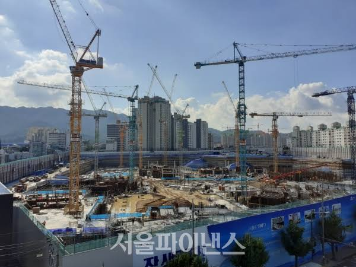

그것은 바로 건설 현장 노가다.
건축 공정이 워낙 복잡하고
직종도 세분화되고 다양하며
예기치 않은 변수도 많기 때문.
건축물은 뭐 로보트가 짓는줄 아냐?
다 사람이 하는거야 인마...

그것은 바로 건설 현장 노가다.
건축 공정이 워낙 복잡하고
직종도 세분화되고 다양하며
예기치 않은 변수도 많기 때문.
건축물은 뭐 로보트가 짓는줄 아냐?
다 사람이 하는거야 인마...
야가다도 이미 "비싼"직종부터 ai가 먹으려ㆍ그하고있음 중장비나 용접같은거
그럼 뭐해 지금 건설업 최흉 최악으로 경기가 안좋은데
??? 개나소나 들어갈 수 있는 일자리중에 지금 흥하는 산업이 있음 ???
노가다 잡부를 싸잡아 얘기하는게 아니라 건설업종 자체가 지금 일거리가 없음
개나소나 못하는 건축사도 요새 일이없음
오 최흉이라는 단어를 진짜로 쓰는 경우 처음 봄 일본식 단어라서 평소엔 못봤는데
자동화되면 저기로 사람 몰림
사람 몰리면 뭐다? 너 아니면 할 사람 많아 하면서 노가다인데 최저시급 줄듯?
저거는 로봇으로 대체하기보단 조립형 건축으로 발전할거 같던데. 이쪽이 로봇 적용하기도 훨씬 쉽고.
퀄리티 컨트롤이나 날씨 등등에 대처하기 쉬운게 공장에서 찍어내서 조립하는거라.
몇십년은 무조건 걸리지
노가다꾼 인건비가 고연봉 항공정비엔지니어보다 훨씬싸고
대기업 생산직보다도 싼데
인간신체활용난이도는 훨씬 높음
굳이 ai가 대체할 가성비가 안나옴
이게 맞음 기술력이 되냐 안되냐 댓글에서 따지는건 바보짓이고
돈(가성비)이 맞냐 안맞냐를 따지는게 산업현장이라
대체 못하지는 않겠지 가성비만 맞으면 현장에 맞춰서 기술이 발전하는거보다 기술에 맞춰서 현장이 바뀌면되는거
실례로 맨날 주제로 올라오는 전기차만 해도 기술 자체는 백년전에 나왔지만 수요가 되고 인프라가 되는 지금에서야 사용중이니까
다만 기존 건축물/설비의 유지 보수면에서는 로봇 완전 자동화보다는 유능한 엔지니어 한명이 로봇,ai를 활용해서 팀 단위로 움직이는건 충분히 가능하다고 봄
노가다 크루라고 하는 단위가 아니라 소사장이 자동화 로봇팀으로 현장 투입되는 경우가 생길테고 그런 사람들이 돈 쓸어담겠지
ㄹㅇ 미래 유망 직종
노가다가 왜 대체가 안돼 진짜ㅜ개헛소리하고 있네 ㅋㅋㅋㅋㅋㅋㅋㅋㅋㅋㅋㅋㅋㅋㅋㅋㅋㅋㅋㅋㅋㅋㅋㅋㅋㅋㅋㅋㅋㅋㅋㅋㅋㅋㅋ
난 10년~20년사이에 대체 될거같은데 두렵다
아니
그 시간동안 로봇이 사람보다 싸질 것 같진 않아
사람 ㅈ나 비쌈. 이젠 잘못되면 형사책임도 있음. 로봇 시키면 안전절차 다 쌩무시하고 낮밤 쉴새 없이 일할 수 있는데.
시간의 문제일 뿐임.... 공사현장 기술자의 노하우도 존중 받아야하겠지만 한편으론 왜 이리 공학과 과학의 힘을 과소평가하는 걸까??
옛날에 통신교환원들도 알고보면 변수가 많고 사람의 사고가 필요한 나름 고급 직종이라고, 절대 교체 안 된다고 자부했었다더라... 근데 결국 순식간에 사라짐....
사람이 저렴해서 그럼 ㅋㅋ
기술력은 문제가 아니고 노가다로봇이 사람보다 싸지려면 오래걸릴거같긴함
아니야
이제 공장에서 블럭형태로 만들어져서 쌓고 조립만 하면 되는 시대가 오고있어
생산품같이 정확한 공정으로 만들어야 하는건 완전 빠르게 대체 될건데
땅의 형태도 다르고 사이즈도 다르니 완전 100% 대체하긴 어렵겠지. 대신 그에 맞게 공법이 바뀌겠지.
지금은 일정 사이즈로 생산되는 품목들이 현장에서 사이즈에 맞게 자동으로 3D 프린팅처럼 만들어버린다던가.
코딩수학보다 공정이 복잡하며
코딩수학보다 직종이 세분화되고 다양하며
코딩수학보다 예기치 않은 변수도 많다면
수학자나 프로그래머보다 돈을 더받아야하는일아니야?
공정 자체가 크게 바뀔자도 모르지, 사람이어야만 했던 것에서
로봇이어야만 할 수 있는 방식으로.
안전 제한이 엄청 줄어들면서 효율적인.
지금 많은 사람이 하는 예상과 다르게 내가 보기엔 사무행정이 살아남고, 저런 몸쓰는 일이 죄다 없어질 거 같음. 사무행정은 AI가 잘하긴 하지만 사람의 최종결재를 제거하기에 엄청난 저항감이 있음. 몸쓰는 일들은 로봇에게 맡기고 잘못되면 로봇을 굴린 담당자에게 의의제기하는게 편하고 좋거든. 그래서 로봇 굴리는 회사도 사람 담당자를 사무행정으로 남겨두려고 하고. 이게 지금 실시간으로 현업에 일어나는 일들임. 사무행정은 규모를 줄여도 없애기엔 부담스러운데, 육체노동 및 서비스 분야는 아예 인건비 0을 목표로 하고 있음.
5년전에 ai는 예술을 대체 할수 없다 했는데 지금 보면 개소리였죠 결국 다 대체된다
하이고 짚신 꼬기가 얼마나 어려운데 짚신장이가 사라지겠나 짚신 안 신고 다니는 사람이 없는데~~
내가 하고 싶은말 바로 있네 ㅋㅋㅋㅋㅋㅋㅋㅋㅋㅋㅋㅋㅋㅋㅋㅋㅋㅋ
앞으론 자동화하기 편한 모듈형 딸깍 건물이 유행하지않을까?
모듈화해서 조립식으로 바뀌지 않을까 싶은데
짤리면 갈곳이 노가다다 최저받고 노가다하는 세상이 온다......
아파트 모듈화로 자으면 로봇이 80퍼는 만듬...
규제가 빡세서 저층만 가능한데 규제 풀리면 바로 쌉가능
많이들 와봐라 ㅋㅋ 뭔 ㅋㅋㅋ 초면에 반말하면서 왜 결혼 안하냐고 찍찍대는 새끼들 아굴창 터뜨려버리려는거 참을수 있는 사람부터가 시작이니까 것도 밥상에서 씨팔
아무도모른다 ㅋㅋ 미래에 어떤일이 생길지
물론 현장사람들은 아무 생각없음 그저 하루하루 노가다 열심히할뿐
배터리만 해결되면 뭐.........
아무데나 똥이나 싸재끼는 인생들이..
대체가 안되는게 아니라
대체 후순위라 그런거임
어치피 법적 기준은 높고 안전도 까다롭고 사람 키우기도 힘들고 하니까 어떻게든 자원부어가면서 만들려고 하긴 할거임. 사람죽을일 없다? 그러면 선진국은 성능떨어지더라도 도입 시도는 계속 해볼거
시간문제지 기술은 이미 충분하고